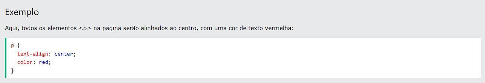
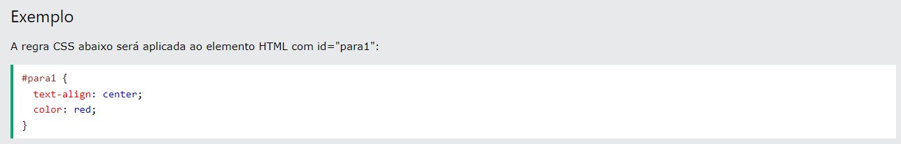
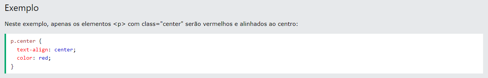
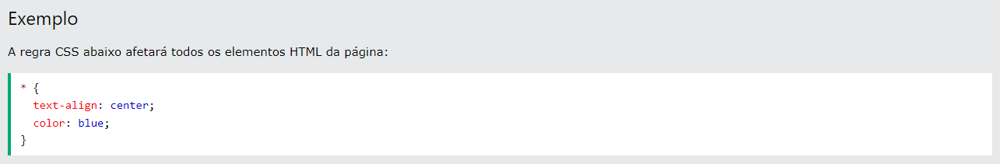

Os seletores são usados para direcionar os elementos
HTML em nossas páginas da web que queremos estilizar.
Há uma grande variedade de seletores CSS disponíveis,
permitindo uma precisão refinada ao selecionar os
elementos a serem estilizados.
Seletor de elemento CSS
O seletor de elemento seleciona elementos HTML com base no nome do elemnto

Seletor de ID CSS
O seletor de ID usa um atributo de ID de um elemento HTML para selecionar um elemnto específico.

O seletor de classe CSS
O seletor de classe seleciona elementos HTML com um atributo de classe específico.
Seletor de classe específico
Você também pode especificar que apenas elementos HTML específicos devem ser afetados por uma classe.

O seletor de mais uma classe CSS
Os elementos HTML também podem se referir a mais de uma classe.

Seletor universal CSS
O seletor universal (*) seleciona todos os elementos HTML na página.
